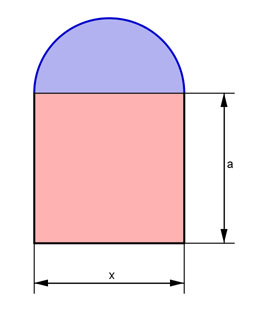
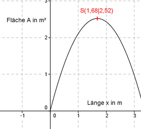

Aufgabe 129 Das Fenster hat einen Umfang von U = 6 m. Wie groß muss man x wählen, damit die Fläche am größten wird?  Rote Fläche = x cm * a cm Radius des Kreisbogens = x/2 (x/2)2 * π x2* π Blaue Fläche = ------------- = ------- 2 8 x * π Umfang des Halbkreisbogens = --------- 2 x * π U = x + 2 * a + ------- |-x 2 x * π x * π U - x = 2a + ------- |- ------- 2 2 x * π U - x - ------- = 2a |:2 2 U x x * π a = --- - --- - ------- 2 2 4 1 π a = 3 - x * (--- + ---) 2 4 1 π x2 * π Gesamtfläche A(x) = x * (3 - x * ( --- + ---)) + -------- 2 4 8 1 π x2 * π A(x) = 3x - x2(---- + ----) + -------- 2 4 8 x2 x2 * π x2 * π A(x) = 3x - ---- - --------- + -------- 2 4 8 x2 x2 * π x2 * π A(x) = 3x - ---- - 2 --------- + -------- 2 8 8 x2 x2 * π A(x) = 3x - ---- - --------- 2 8 1 π A(x) = 3x - x2 (--- + --- ) 2 8 4 + π A(x) = - x2(---------) + 3x = - 0,8925x2 + 3x 8 Dies ist die Funktionsgleichung einer nach unten geöffneten, gestauchten Parabel, deren höchster Punkt der Scheitelpunkt ist. 4 + π 4 + π A(x) = - x2(---------) + 3x |:(- --------) 8 8 8A(x) 24x - ---------- = x2 - --------- 4 + π 4 + π Quadratische Ergänzung: 8A(x) 24x 12 12 - ---------- = x2 - --------- + (--------)2 - (--------)2 4 + π 4 + π 4 + π 4 + π 24x 12 12 mit x2 - --------- + (--------)2 = (x - --------)2 4 + π 4 + π 4 + π 8A(x) 12 12 8 - ---------- = (x - --------)2 - (--------)2 |:(- ---------) 4 + π 4 + π 4 + π 4 + π 4 + π 12 144 4 + π A(x) = - -------- (x - ---------)² + ----------- * -------- 8 4 + π (4 + π)² 8 4 + 3π 12 18 A(x) = - ----------(x - ---------)2 + ------- 8 4 + π 4 + π 12 18 Scheitelpunkt abgelesen: S(---------|-------) 4 + π 4 + π Scheitelpunkt abgelesen: S(1,68|2,52) Die Scheitelpunktkoordinaten bedeuten: Ist die Länge x = 1,68 m entsteht die größte Fläche A = 2,52 m². 